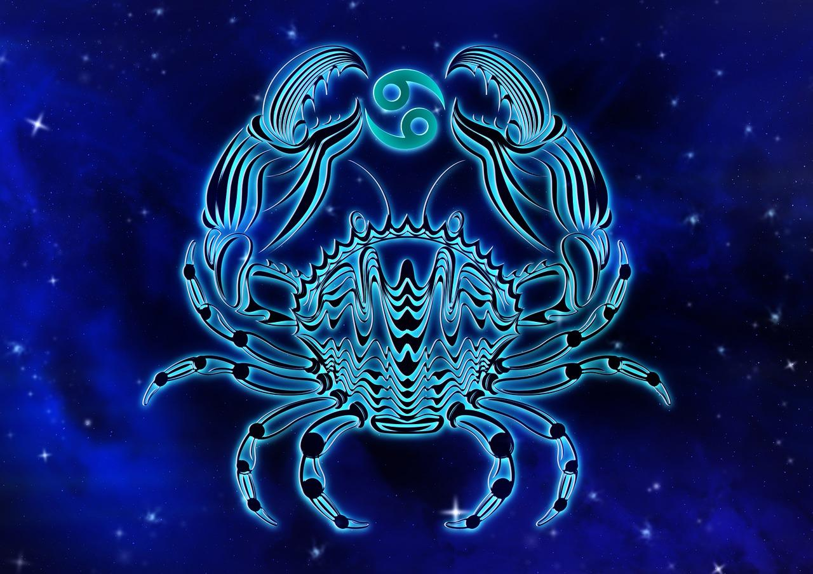

РАК
(22 червня до 23 липня)


Раки образливо сприймають критику. Разом з тим вони дуже віддані, для неї важлива любов, шлюб і сім'я.
Це наймістичніший і найтаємничіший знак. Народжені під ним люди емоційні, сором'язливі та ті, які легко піддаються настрою. Раки вразливі та сентиментальні. Їхня реакція на все, що відбувається навколо, дуже швидка і виразна. Вони – романтики, котрі здатні жертвувати собою. Часто представники цього знака відчуває складні душевні переживання. Як правило, вони доброзичливі, але можуть бути як люб'язними та відвертими, так і меланхолійними, замкнутими й стриманими. Раки – песимісти. Песимізм проявляється у всіх сферах їхнього життя та отруює їм навіть найбільш радісні моменти.
- Особливості: проникливість, емпатія, сором'язливість, вразливість, благородство, обережність і далекоглядність.
- Символізм: рак, краб, серце.
- Вплив: представники цього знака Зодіаку вкрай емоційні, але воліють приховувати свої почуття.
- Камені-талісмани: перли, рубін, смарагд, кальцит, котяче око, місячний камінь, кришталь, целестин.
Раки образливо сприймають критику. Разом з тим вони дуже віддані, для неї важлива любов, шлюб і сім'я.